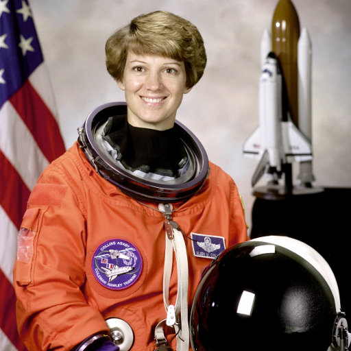
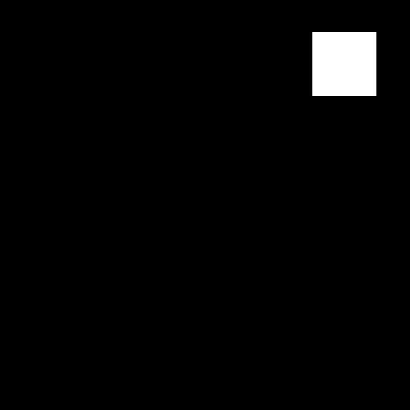

COM0418 Görüntü İşleme
Image
Spatter V1
Yerel görüntülerde JPEG sıkıştırma farklarının incelenmesi

Hata Seviyesi Analizi
Yeniden sıkıştırma, bazı piksel değerlerini değiştirir.
- Görüntüyü seçilen kalitede bellekte JPEG’e kodla ve geri aç.
- Her pikselde üç kanalın mutlak farkını al ve ortalamasını hesapla.
- İki kaliteyi aynı 0–20 renk ölçeğinde yan yana göster.
Electron yerel dosyayı seçer. Python ve OpenCV analizi hesaplar. Sonuç Electron penceresinde gösterilir.
Kontrollü deney
512 × 512 piksel kaynak görüntüden üç eşleştirilmiş deney üretildi.
Kontrol ve düzenlenmiş kopyalar aynı son kaliteyle kaydedildi. Düzenlenmiş kopyalarda aynı 80 × 80 parça üç ayrı konuma taşındı.
Ölçümler, bilinen bölge içi ortalama farkı ve bölgeyi çevresinden ayıran piksel ROC-AUC değerini içerir.

Kalite 80, üç konumda da en iyi ayrımı verdi
| Analiz kalitesi | Ortalama ROC-AUC | Bölge ortalama farkı, kontrol ile düzenlenmiş |
|---|---|---|
| 20 | 0,853 | 9,074–10,737 |
| 80 | 0,957 | 5,231–5,781 |
| 95 | 0,877 | 1,320–1,773 |
Kalite 20’de düzenlenen bölgedeki fark büyüdü. Arka plandaki farkların da artması, bölgeyi ayırmayı zorlaştırdı.
ROC-AUC üç yerleşimin ortalamasıdır. Süre, yedi analiz çalıştırmasının medyanı olarak yaklaşık 40–70 ms aralığındaydı.
Uygulama demosu

- Kontrol ve kontrollü düzenleme örneklerini aç.
- 80 ve 95’i karşılaştır. Ardından A’yı 20’ye indir.
- Üst üste göster ve yapıştırılan bölgeye yakınlaş.
Sonuçların yorumlanması
ELA haritası, seçilen JPEG kalitesiyle oluşan piksel farklarını gösterir.
Yüksek farklar doğal kenarlarda, dokularda ve farklı sıkıştırma geçmişi olan bölgelerde görülebilir. Harita, fotoğrafın geçmişine ilişkin bir inceleme ipucudur.
Deney tek fotoğraf ve tek parça kullanır. Genel performans için farklı görüntüler, sıkıştırma geçmişleri ve düzenleme türleriyle bağımsız test gerekir.
Yöntem, ham ölçümler ve yeniden çalıştırma komutu teknik raporda yer alır.